India is the world’s second-largest producer of pepper.
Despite having over half of the global pepper cultivation area, it contributes only 11–17% of total production.
A major cause of this low yield is pepper foot rot, responsible for up to $716.9 million in annual global losses.
PhytClub's proposed solution to combat pepper foot rot is by targeting Phytophthora capsici at its zoospore stage. It utilizes an siRNA-chitosan nanoformulation for silencing the bZIP1 gene, essential for its infection processes.
Complementing this, its software solution aids in the development of siRNA-nanoparticle delivery systems for other projects, broadening the scope of the project.